申請や勤怠を承認する
勤怠承認申請や各種申請があった場合の承認は［承認］メニューから行います。
［承認］をクリックすると以下のサブメニューが表示されます。権限によっては、表示されないサブメニューがあります。
（詳しくは、「権限ごとに操作できるメニュー一覧」をご確認ください。）
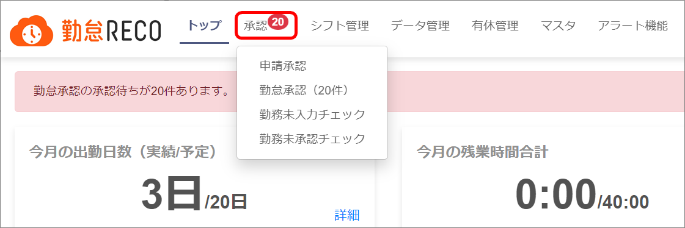
［申請承認］
従業員からの休暇申請や残業申請等の各種申請を承認します。「共通マスタ」で「承認申請機能」を「使用する」にしていないと使用できません（メニュー表示されません）。
詳しくは、「各種申請を承認する」を参照してください。
［勤怠承認］
従業員の勤怠を確認し、承認します。［従業員マスタ］で固定承認者に設定されている、または、［プロジェクトファイル］で承認者に設定されている場合、承認待ちの通知が表示されます。
詳しくは、「勤怠を承認する」を参照してください。
［勤務未入力チェック］
打刻漏れしている従業員がいないかを確認し、該当者にはメール送信します。
詳しくは、「未入力の勤務実績をチェックする」を参照してください。
［勤務未承認チェック］
勤怠実績の未承認がないか確認します。
詳しくは、「未承認の勤務実績をチェックする」を参照してください。
ご注意 |
［勤務未承認チェック］はシステム管理者アカウントと人事担当者アカウントでのみ操作可能です。 |
各種申請を承認する
各種申請の承認は、申請承認画面の［承認］タブ画面で実施します。
ヒント |
各種申請があった場合、「承認経路マスタ」で承認者/決裁者として設定されているユーザーのトップ画面には承認待ちの通知が表示されます。
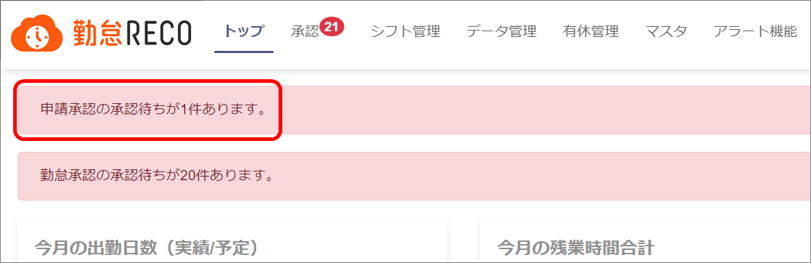
ピンク帯内の文字をクリックすると、申請承認画面に遷移します。
|
ご注意 |
各種申請を承認できるのは、承認者アカウント、課長級アカウント、人事担当者アカウント、システム管理者アカウントです。 |
［承認］タブ画面について
管理用トップ画面のメニュー［承認］＞［申請承認］をクリックすると、［承認］タブ画面が表示されます。
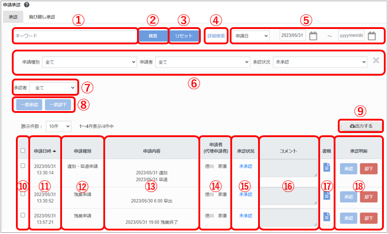
キーワードボックス
検索用キーワードを入力します。
［検索］ボタン
キーワードを入力し、該当する項目で絞り込みを行います。
検索の対象になる項目は申請種別、申請理由、申請内容、決裁者のコメントです。
-
［リセット］ボタン
クリックすると検索キーワードや、詳細検索項目などの検索条件をリセットします。
-
詳細検索
クリックすると詳細検索項目を表示します。
-
日付検索
ドロップダウンリストから「申請日」、「対象日」を切り替え、右のカレンダーに期間を入力し絞り込みます。
-
詳細検索項目
「詳細検索」をクリックすると表示され、「申請種別」、「申請者」、「申請状況」、「承認状況」で検索できます。
-
承認者検索 ※システム管理者の画面のみ
承認者で絞り込んで検索すると、該当者が実施した各申請の承認状況が表示されます。
承認者で絞り込まずに「全て」を選択して検索すると、各申請の申請状況が表示されます。
-
一括承認／一括却下
⑩のチェックボックスで選択されている申請すべてをまとめて承認、却下します。
-
［出力する］ボタン
表示されている一覧を印刷します。チェックボックスにチェックがある場合は、チェックがある項目のみ印刷します。
-
チェックボックス
クリックすると対象の行を選択／選択解除します。項目行のチェックボックスを操作すると、一括選択／一括選択解除できます。
-
申請日時
申請者が申請した日時です。
-
申請種別
申請内容の種別です。
-
申請内容
申請理由、対象日、申請内容が表示されます。
-
申請者（代理申請者）
申請した人を表示します。（）内は代理申請者が表示されます。
システム管理者アカウントでログインしている場合、全従業員の勤怠を検索できます。
（承認経路外の申請の承認・却下はできません。）
-
承認状況
承認状況をクリックすることで、すべての承認者、決裁者の承認日付とコメントが確認できます。
-
コメント
承認者からの最新のコメントが表示されます。
-
書類
をクリックすると、申請の詳細を閲覧できます。
-
承認判断
クリックして申請の［承認］または［却下］を選択します。
申請を承認する
［承認］をクリックし、［申請承認］をクリックする
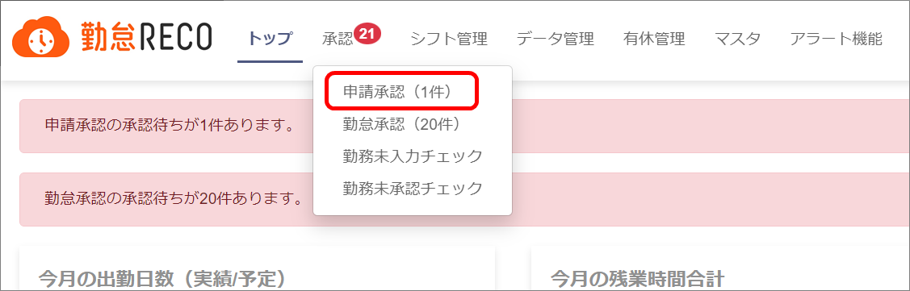
「申請承認」の「承認」タブ画面が表示されます。
-
申請内容を確認し（①）、必要があればコメントを入力する（②）
「申請承認」の「承認」タブ画面が表示されます。
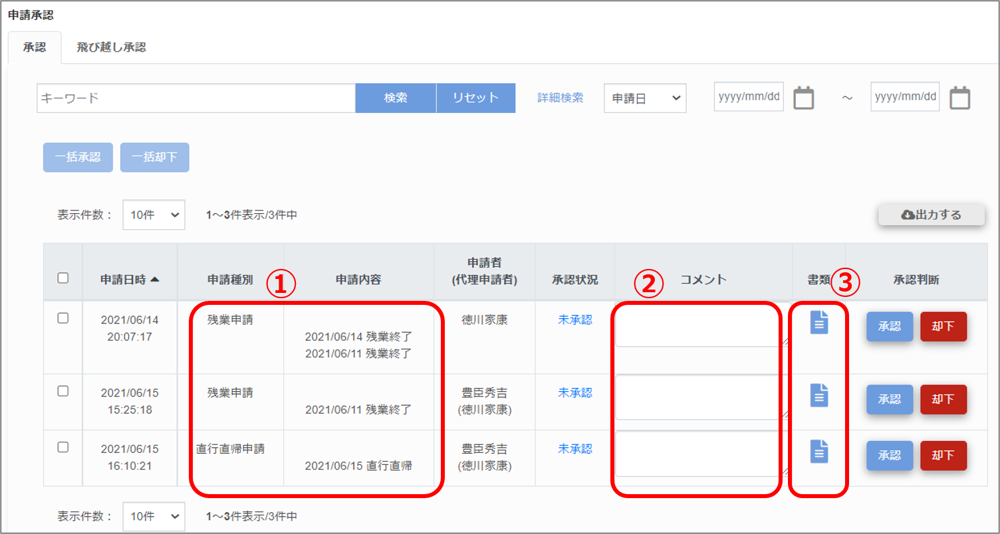
ヒント |
をクリックすると（③）、申請詳細画面が表示され、詳細情報を確認できます。
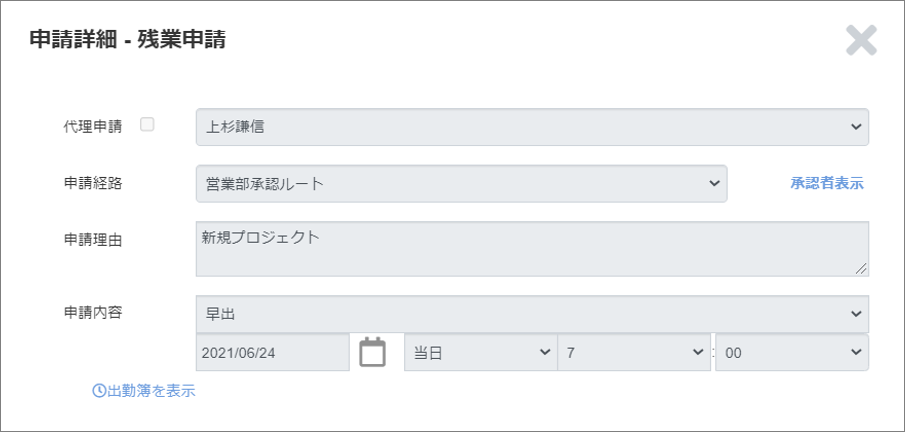
|
-
［承認］または［却下］をクリックする
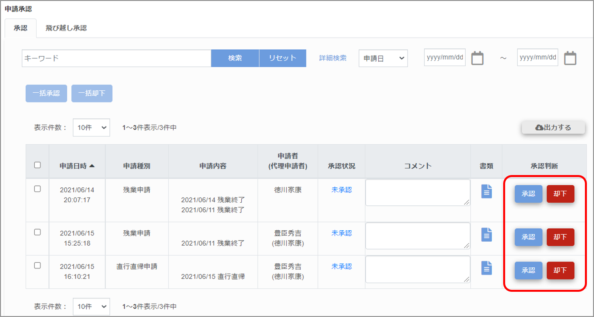
画面上部に「更新が完了しました。」とメッセージが表示されましたら、選択した申請の承認（却下）の登録は完了です。
ヒント |
未承認の申請が複数ある場合は、まとめて承認判断することもできます。
項目行のチェックボックスにチェックを入れ、［一括承認］または［一括却下］をクリックしてください。
|
飛び越し承認する
飛び越し承認では自分より前に承認すべき人が不在の場合などに、その人を飛び越して承認します。
管理用トップ画面のメニュー［承認］＞［申請承認］＞［飛び越し承認］タブをクリックすると［飛び越し承認］タブ画面が表示されます。
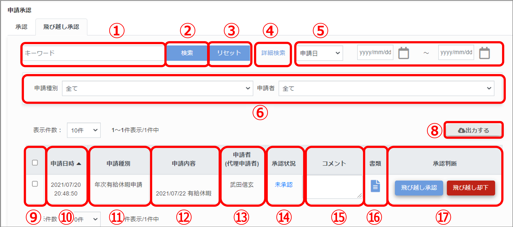
［飛び越し承認］タブ画面の内容については、「［承認］タブ画面について」を参照してください。
※［飛び越し承認］タブには［承認］タブの「⑦一括承認/一括却下」はありません（飛び越し承認では一括承認/一括却下ができません）。
月次の勤怠を承認する
勤怠を承認する
従業員の勤怠を確認し、承認／否認します。
ヒント |
従業員が勤務実績を登録すると、固定承認者またはプロジェクト承認者のトップ画面に、承認待ちの通知が表示されます。
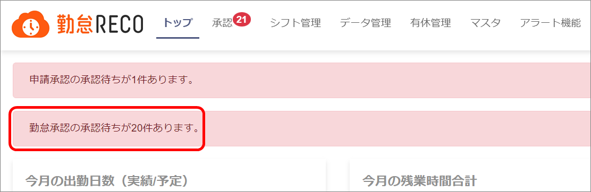
ピンク帯内の文字をクリックすると、勤怠承認画面に遷移します。
|
［承認］をクリックし、［勤怠承認］をクリックする
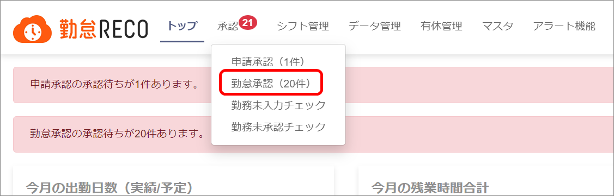
「勤怠承認」画面が表示されます。
-
承認する勤怠の期間を指定し（①）、［検索］ボタンをクリックする（②）
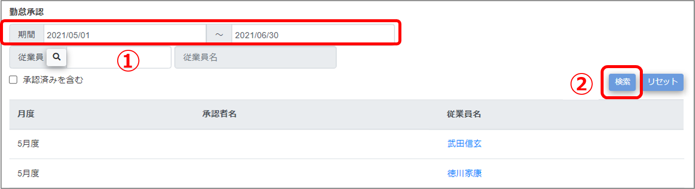
勤怠承認する従業員名が表示されます。
ヒント |
「承認済みを含む」にチェックをつけて検索すると、勤怠を全て承認した従業員も表示できます。承認済みの場合、従業員名の横にが表示されます。
|
-
承認したい従業員名をクリックする
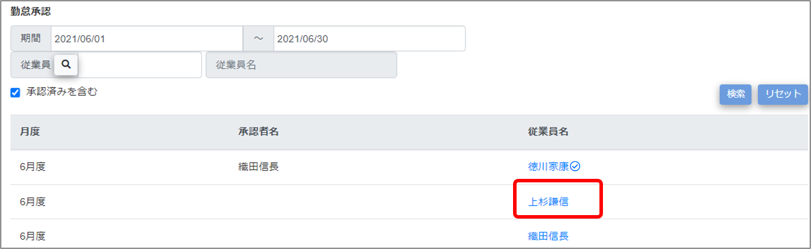
選択した従業員の勤務実績画面が表示されます。
-
承認欄の▲をクリックし承認する（①）
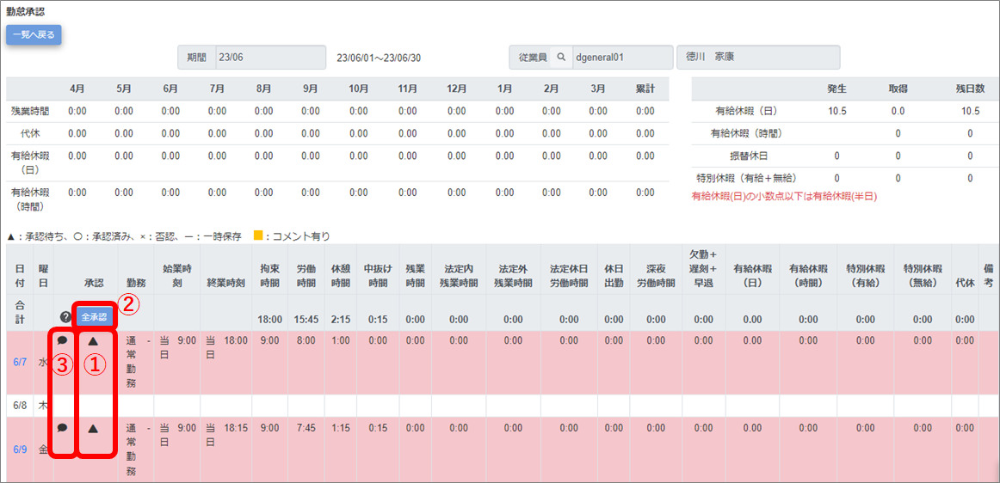
ヒント |
-
▲はクリックするたびに〇（承認）→×（否認）→▲（承認待ち）に切り替わります。
-
勤怠が一時保存の場合は、「‐」が表示されており、承認や否認ができません。
-
表示されているすべての勤怠を一括して承認したい場合は［全承認］ボタンをクリックしてください（②）。
をクリックするとコメントを入力できます（③）。もう一度をクリックするとコメント欄が閉じます。
|
-
［更新する］ボタンをクリックする
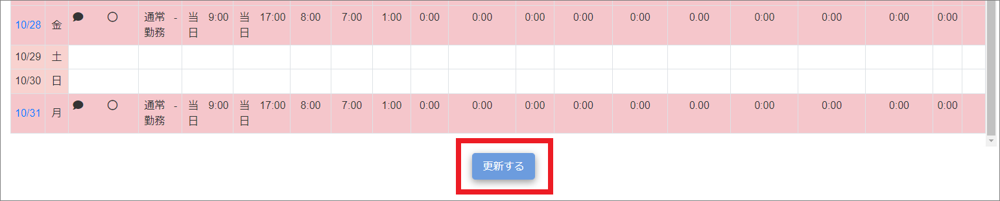
画面上部に「更新が完了しました。」とメッセージが表示され、承認結果やコメントが登録されます。
ヒント |
-
承認者のコメントがある日はの背景が黄色になります（①）。
-
日報に複数プロジェクトが登録されている場合は、プロジェクト毎に承認ができます。（②）
-
申請した従業員からコメントがある場合は、備考欄に「･･･」が表示されます（③）。マウスオーバーするとコメントを確認できます。
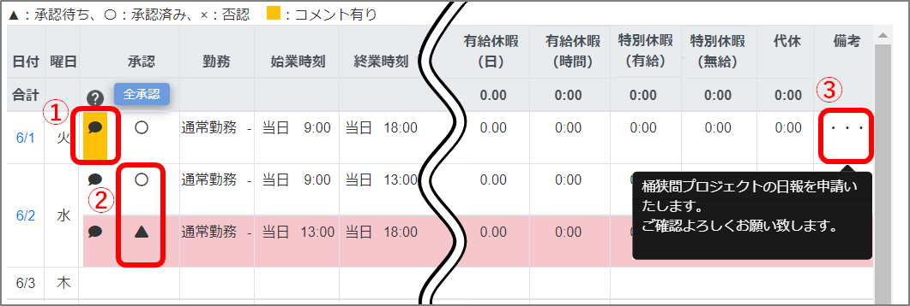
|
未入力の勤務実績をチェックする
承認対象者で打刻漏れしている人がいないかを確認します。該当者には勤怠入力依頼のメールを送信します。
-
［承認］をクリックし、［勤務未入力チェック］をクリックする
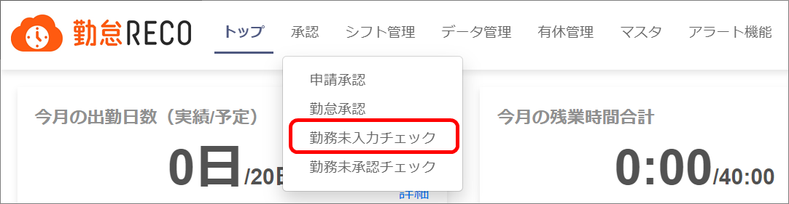
「勤務未入力チェック」画面が表示されます。
-
未入力のチェックをする期間を指定し（①）、［検索］ボタンをクリックする（②）
該当期間の勤務未入力者、および未入力日付がリストアップされます。
-
チェックボックスにチェックを入れ（①）、［メール送信］ボタンをクリックする（②）
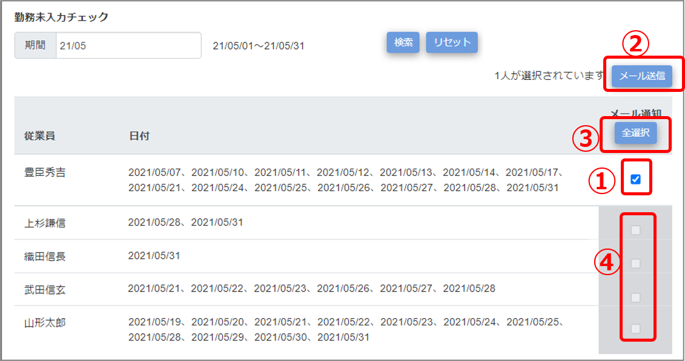
画面上部に「通知メールを送信しました。」というメッセージが表示され、対象者に勤務入力を依頼するメールが送信されます。
ヒント |
-
［全選択］ボタンをクリックしてから（③）［メール送信］ボタンをクリックすると、すべての未入力者に一括してメール送信できます。もう一度［全選択］をクリックすると、全選択が解除されます。
-
チェックボックスがグレーアウトになっている対象者（④）にはメール送信できません。
送信できない理由は以下のいずれかが原因です。
※原因解消の際のマスタ変更はシステム管理者権限のあるアカウントで行ってください。
|
未承認の勤務実績をチェックする
勤務実績の未承認がないかを確認します。人事担当者が勤怠承認者に対して行うチェックです。未承認があった場合は、承認者に通知メールを送信します。
ご注意 |
未承認の勤務実績をチェックできるのは、人事担当者アカウント、システム管理者アカウントです。 |
-
［承認］をクリックし、［勤務未承認チェック］をクリックする
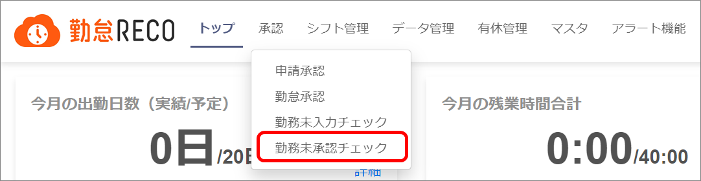
「勤務未承認チェック」画面が表示されます。
-
チェックする期間を指定し（①）、［検索］ボタンをクリックする（②）
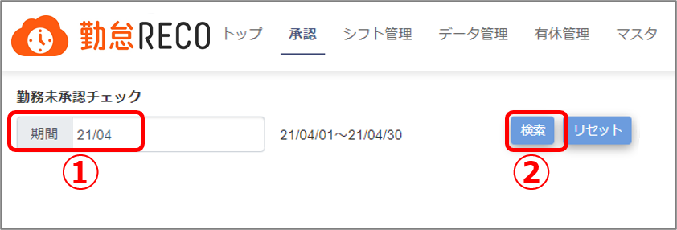
該当期間の未承認者がリストアップされます。
-
チェックボックスにチェックを入れ（①）、［メール送信］ボタンをクリックする（②）
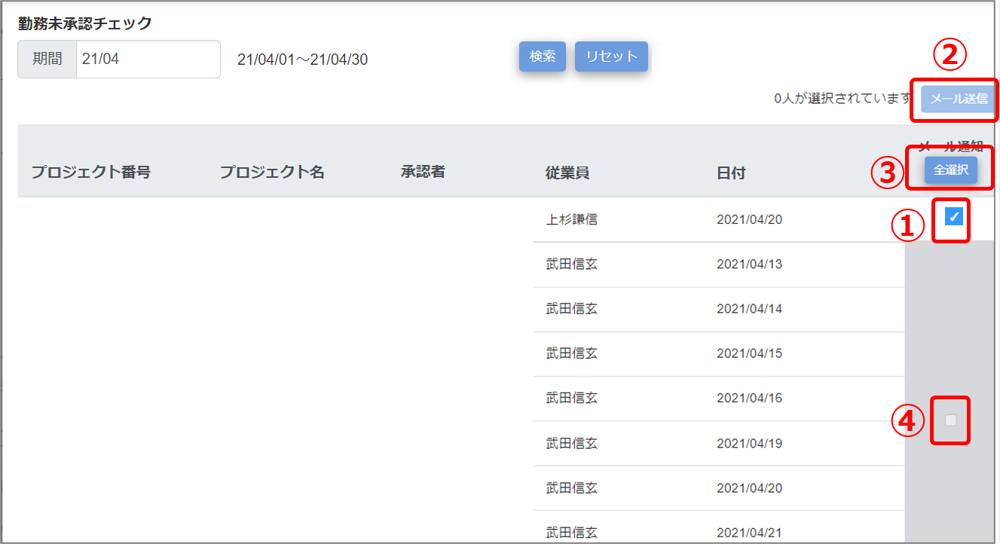
画面上部に「通知メールを送信しました。」というメッセージが表示され、対象の承認者に勤務承認を依頼するメールが送信されます。
ヒント |
-
［全選択］ボタンをクリックしてから（③）［メール送信］ボタンをクリックすると、すべての未承認者に一括してメール送信できます。もう一度［全選択］をクリックすると、全選択が解除されます。
-
チェックボックスがグレーアウトになっている対象者（④）にはメール送信できません。
送信できない理由は以下のいずれかが原因です。
※原因解消の際のマスタ変更はシステム管理者権限のあるアカウントで行ってください。
|
締日に勤怠確定処理をする
全従業員の勤怠承認後、確定処理を行います。確定処理後は勤怠実績が編集できなくなります。
-
［承認］をクリックし、［勤務未承認チェック］をクリックする
「勤務未承認チェック」画面が表示されます。
-
日付を確定したい月を指定し（①）、［検索］ボタンをクリックする（②）
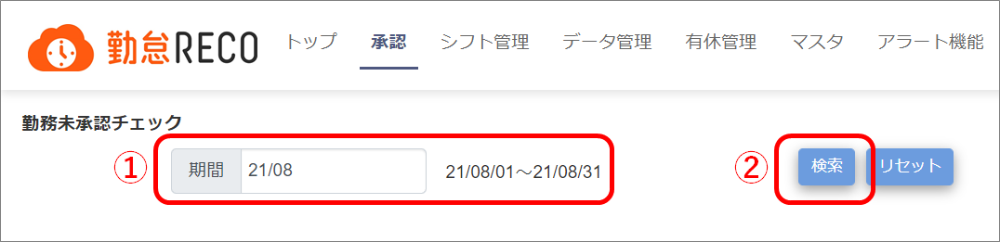
勤怠未承認がなければ確定作業案内画面が表示されます。
-
［確定処理］をクリックする
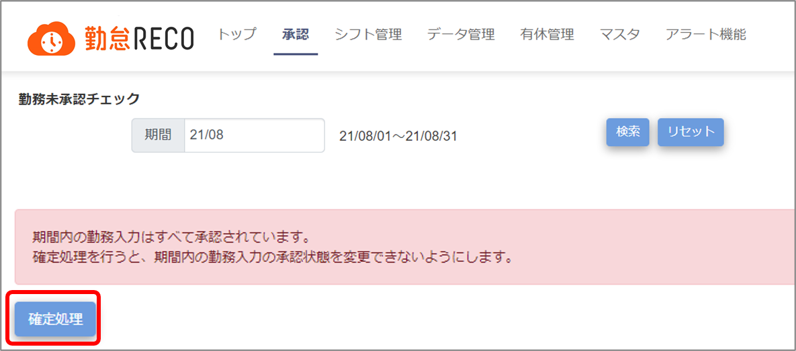
確定処理を実行します。
画面上部に「確定処理が成功しました。」とメッセージが表示されると処理は終了です。
［マスタ］＞［共通マスタ］の「確定処理日」が更新されます。
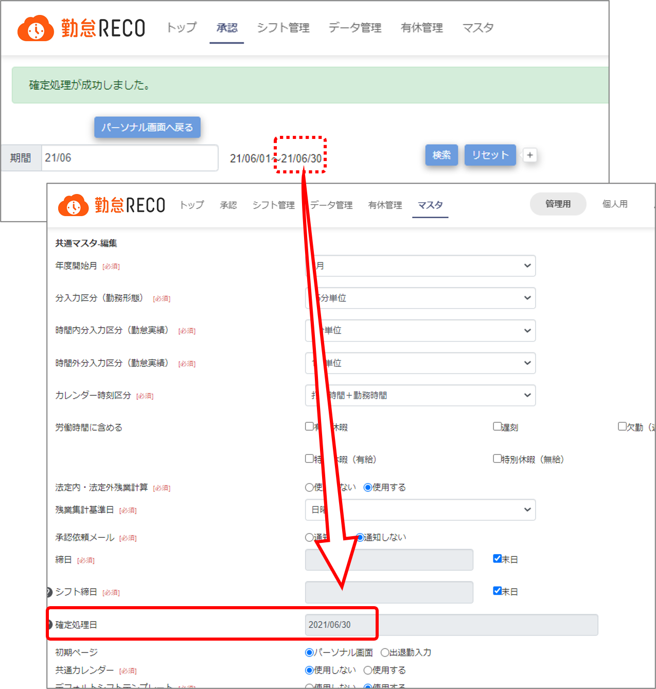